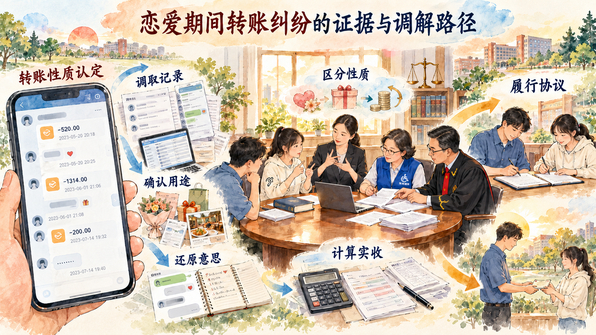

公平正义怎样进入立法、执法、司法和守法的每一个环节
法治中国建设把宏观制度落实到具体行动。立法回应社会发展并形成良法，行政机关严格规范公正文明执法，司法机关依据事实和法律公正裁判，社会成员在办事依法、遇事找法、解决问题用法、化解矛盾靠法中形成法治社会。正当防卫、恋爱转账和体育“饭圈”治理，让这些环节以不同方式进入青年生活。
一、法治中国建设的总体目标
法治中国建设的总体目标，是到 2035 年基本建成法治国家、法治政府、法治社会。法治国家强调国家治理全面纳入法治轨道，法治政府要求行政权依法规范运行，法治社会要求全社会尊法学法守法用法。三者相互联系，构成法治中国建设的整体目标。
法治建设以保障和促进社会公平正义为主线。公平正义既体现在实体结果，也体现在每个人能够平等进入程序、充分表达意见、获得说明理由和依法寻求救济。无障碍诉讼、公开裁判、行政复议、公共法律服务等制度，把权利保障转化为可使用的现实条件。
二、法治中国建设的工作布局
建设法治中国，坚持依法治国、依法执政、依法行政共同推进，坚持法治国家、法治政府、法治社会一体建设。共同推进强调治国、执政和行政活动都要遵循法治要求；一体建设强调国家制度、政府行为和社会基础相互支撑。
推进工作还要坚持全面推进科学立法、严格执法、公正司法、全民守法。立法提供规范，执法把规范落实到行政管理，司法解决纠纷并维护规则权威，守法构成法治运行的社会基础。四个环节互相反馈：案件和执法发现的新问题可以推动规则完善，清晰规则又为执法司法和社会行为提供预期。
三、建设更高水平的法治中国
更高水平的法治中国要求把党的领导贯彻到全面依法治国全过程和各方面，维护宪法法律权威，提高立法质量，深入推进依法行政，严格公正司法，加快建设法治社会，加强涉外法治，建设德才兼备的高素质法治工作队伍。
司法是维护社会公平正义的最后一道防线。公正司法要求以事实为根据、以法律为准绳，让办案过程和裁判结果经得起检验。面对正当防卫案件，司法人员要回到冲突发生时的具体处境，判断不法侵害是否正在进行、防卫意图是否存在、力量对比怎样、手段和强度是否明显超过必要限度。
案例研究｜15 人围住一名 14 岁学生以后：正当防卫为什么不能只看谁受伤更重
一次春游中，14 岁的江某某与同学聊天，提到另一名学生吴某的负面话题。话传到吴某那里后，吴某通过信息威胁江某某，并要求他购买香烟。江某某受到压力后买了香烟，也随身带了一把折叠刀。这些前情使案件既包含持续威胁，也产生了“携刀是否说明早有斗殴意图”的争议。
后来，吴某等人把江某某带到学校厕所。现场聚集了约 15 名学生，出口和活动空间受到限制。吴某等人扼住江某某颈部，把他摔倒在地，并继续踢打。对一名 14 岁学生而言，人数差距、封闭空间、颈部受控和倒地后的持续攻击共同构成正在发生的危险。
江某某在遭受围堵殴打时使用折叠刀反击，造成两人重伤二级、一人轻微伤。案件进入刑事程序后，伤害结果十分醒目。如果只从结果倒推，持刀一方似乎成为造成严重后果的一方；正当防卫判断要求司法人员把视线重新放回行为发生的那一刻。
办案机关需要重建完整现场：冲突由谁发起，谁把谁带到厕所，现场有多少人，出口是否受阻，江某某受到何种攻击，反击发生在侵害进行中还是结束后，行为人是否具有主动约架、报复或者争强斗狠的意图。证人陈述、伤情鉴定、现场位置和前后联系记录共同进入判断。
案件曾以故意伤害罪提起公诉。2020 年 7 月 6 日，一审法院认定江某某的行为属于正当防卫，宣告无罪。检察机关提出抗诉后，上一级检察机关重新审查案件事实和法律适用，撤回抗诉；2022 年 11 月 9 日，中级法院裁定准许撤回。不同程序主体的审查使案件经历了指控、审判、抗诉和再审视。
法院没有把“携带折叠刀”单独解释为斗殴故意。判断主观意图要综合冲突原因、行为人过错、是否主动邀约、是否准备工具寻求对抗、面对侵害时的反应等事实。江某某受到威胁、被多人带入厕所并遭围殴，这些事实支持其反击目的在于制止侵害。
判断必要限度也不能脱离当时条件。多人对一人、未成年人之间体格和力量差异、扼颈和倒地踢打的危险、厕所空间等因素，都会影响防卫人能够选择的手段。法律要求审查防卫行为是否明显超过必要限度并造成重大损害，而不是在安全环境中要求防卫人精确控制每一次动作。
2024 年 5 月 30 日，最高人民法院将该案发布为指导性案例 225 号。一个校园冲突由此形成可供同类案件参照的裁判规则：区分正当防卫与相互斗殴，要综合判断行为人主观意图；判断防卫限度，要立足防卫发生时的具体情境，综合侵害性质、手段、强度、人数、现场和双方力量对比。

讨论题
- 区分正当防卫与相互斗殴，应当从哪些事实判断行为人的主观意图？
- 判断防卫是否明显超过必要限度，为什么要回到防卫发生时的具体处境？
- 指导性案例怎样把一个案件中的裁判规则转化为同类案件可以参照的公共规则？
资料来源：最高人民法院《指导性案例 225 号：江某某正当防卫案》，2024 年 5 月 30 日。
新闻摘录｜四十余件正当防卫案例进入案例库：一个案件怎样服务“类案同判”
刑法关于正当防卫的条文篇幅有限，现实冲突却具有不同形态：有人在家中面对非法侵入，有人在公共场所制止暴力，有人长期受到欺凌后在一次正在进行的攻击中反击。办案人员需要把抽象条件同具体事实连接起来，人民法院案例库为这种连接提供可检索的裁判材料。
入库案例不是把裁判文书直接上传。已经生效的案件经过遴选、审核，确认对统一法律适用、指导审判实践具有参考价值后进入案例库。案例提炼争议焦点、裁判理由和适用规则，使法官、检察官、律师和普通公众能够看见同类问题怎样审查证据、理解条文。
截至最高人民法院 2025 年公开材料所述时点，案例库正当防卫专题已收录 40 余件案例。不同场景共同回答几个关键问题：不法侵害何时开始和结束，防卫人是否具有制止侵害的意图，防卫行为与侵害强度是否相适应，事后报复与当场防卫怎样区分。案例数量增加，使同一条法律在多种现实情境中得到展开。
人民法院审理案件时应当检索案例库。找到相似参考案例后，法官需要比较关键事实和争议问题。参考案例是裁判说理的重要资源，裁判依据仍然是法律法规和司法解释。当事人或律师提交入库案例主张参照时，法院要在裁判理由中回应。案例检索、事实比较和公开说理共同增强裁判可预期性。
讨论题
- 正当防卫已有刑法规定，为什么仍需积累不同场景的案例？
- 检索到相似案例以后，法官为什么还要比较案件事实，不能只复制结论？
- 案例库怎样帮助普通公民理解权利边界并形成行为预期？
资料来源：最高人民法院《高质量办理代表建议典型案例》，2025 年；《人民法院案例库建设运行工作规程》，2024 年。
参考资料｜指导性案例、入库参考案例和普通裁判文书怎样发挥不同作用
普通裁判文书记录具体案件的事实、当事人主张、裁判理由和结果，是司法公开的重要载体。大量文书让社会了解法院怎样解决纠纷，也为研究裁判尺度提供材料。
入库参考案例从已经生效的案件中遴选，经过审核后进入人民法院案例库。它们通常针对具有典型性、疑难性或新颖性的法律适用问题，提炼裁判要旨。法官办案应当检索案例库，在关键事实和争议问题相似时将参考案例用于分析和说理。
指导性案例由最高人民法院依照专门程序遴选和发布，承担统一裁判尺度、指导全国法院审判工作的重要功能。江某某案成为指导性案例后，其关于防卫意图和防卫限度的判断方法，可以进入校园欺凌、多人围殴等相似案件的法律适用。
三类材料形成从公开案件到精选规则资源的层次。普通文书提供丰富事实，入库案例提供可检索的参照，指导性案例提供更集中明确的裁判规则。它们共同服务统一法律适用和司法公开。
资料来源：最高人民法院《人民法院案例库建设运行工作规程》及人民法院案例库相关说明，2024 年。
参考资料｜恋爱转账的法律性质怎样从证据中形成
恋爱期间的资金往来可能具有不同法律性质。判断从证据出发，而不是从某一个数字或一句备注直接得出结论。
| 需要观察的证据 | 可以回答的问题 |
|---|---|
| 转账时间与频率 | 是节日、生日的偶发给付，还是持续性资金往来？ |
| 金额与备注 | 是表达情感的小额转账，还是标明借款、购房、彩礼等具体用途？ |
| 聊天记录与语音 | 双方是否形成借款合意、婚约表示或共同消费安排？ |
| 资金实际用途 | 款项用于日常共同生活、个人消费、购置共同财产，还是由一方单独支配？ |
| 平台和经纪分成 | 直播打赏总额中，对方实际取得多少？ |
| 见家长、谈婚、购房等行为 | 给付是否与缔结婚姻的共同意思相联系？ |
| 分手后的沟通与履行 | 双方是否确认欠款、返还范围或达成新的协议？ |
证据组合可以区分日常消费、一般赠与、借款、彩礼或以结婚为目的的大额给付。520、1314 等数字能够说明情感表达语境，款项性质仍要结合金额、目的、双方意思和实际受领情况判断。
资料来源：《中华人民共和国民法典》；最高人民法院涉彩礼纠纷典型案例及残疾人诉讼服务、多元解纷典型案例。
案例研究｜分手以后，520 元、直播打赏和婚约支出怎样逐笔分类
张某是一名言语残疾人。她通过直播平台认识了签约主播王某，两人从线上互动发展为恋爱关系，又在线下见面并谈论婚姻、见家长和购房。表达感情与直播消费交织在同一段关系中，使每一笔钱的性质在分手后变得复杂。
交往期间，张某通过两次直播打赏和微信转账，累计支出 91342 元。部分转账发生在节日、生日，金额中出现 520、1314 等具有情感含义的数字；较大金额通过直播间支付，平台和经纪公司还要按照协议参与分成。张某主张款项与双方结婚约定有关，王某则对返还范围有不同理解。
案件进入法院后，程序能否被张某充分理解和使用成为第一步。法院开通绿色服务通道，引入残联调解员和手语翻译师，使张某能够准确表达恋爱过程、付款原因和诉求。无障碍服务把抽象的诉讼权利转化为当事人能够实际参与的程序。
法官没有依据“恋爱期间转账”作整体判断，而是逐项重建关系发展和资金流动。调查走访社区、邻居和亲友，了解双方是否以结婚为目的交往；调取直播平台支付记录、直播内容、聊天记录、录屏和微信转账流水；核对双方关于见家长、购房和以打赏折抵彩礼的表达。
直播打赏还需要还原分成链条。支付金额先进入平台，再由平台与经纪公司分配，经纪公司按协议向主播结算。公开案例材料显示，平台与公司按 50∶50 分成，公司取得部分再与王某按 80∶20 分成。张某支付的打赏总额与王某实际获得的金额存在差异，返还范围因此要依据实际受领确定。
证据整理后，双方把款项分成不同类型。节日、生日以及 520、1314 等表达情感的小额转账，共计 16342 元，被确认为恋爱交往中的一般赠与。与谈婚、见家长和打赏折抵彩礼意思相关的直播支付，则结合婚约表示和实际受领情况处理。
残联调解员、手语翻译师和法官共同组织沟通，把法律关系、平台分成和可执行方案用双方能够理解的方式说明。最终，双方确认王某实际取得 30000 元，并就返还该金额达成调解，当日履行。案件从情感争议进入证据分类，又通过无障碍调解落实权利救济。
这个过程展示了公正司法的具体形态：程序对不同当事人真实可达，事实通过多种证据得到还原，资金按照法律关系和实际流向分类，调解结果能够及时履行。法治没有替当事人评价感情，而是为争议提供清晰、公平、可执行的解决机制。

讨论题
- 520、1314 这些数字本身能否决定一笔转账的法律性质？还需要哪些证据？
- 为什么返还金额要考察平台、经纪公司和主播的实际分成，而不直接等于打赏总额？
- 手语翻译、残联调解员和诉调机制怎样使程序公正真正可达？
资料来源：最高人民法院、中国残联《残疾人诉讼服务和多元解纷典型案例（第二批）案例三》；最高人民法院《第三批涉彩礼纠纷典型案例》，2025 年。
新闻摘录｜从“大粉”引战到平台责任：体育“饭圈”治理进入哪些法治环节
体育赛事原本以竞技表现吸引观众，一些网络社群却把支持运动员变成阵营对抗。具有较强动员能力的账号发布拉踩内容，把比赛失利归因于另一名运动员或教练员；群组成员集中转发、辱骂和举报，攻击对象从赛场表现延伸到外貌、家庭和私人生活。线上对立还可能转向线下聚集，干扰训练、比赛和公共场所秩序。
治理首先从信息和账号链条入手。监管部门识别侮辱谩骂、造谣攻击、煽动对立、泄露个人信息和组织异常举报等行为，要求网站平台清理违法违规信息、处置账号和解散违规群组。2025 年 4 月公开材料显示，相关治理累计清理违法违规信息 160 万余条，处置账号 7.6 万个，关闭账号 3767 个；其中关闭 1376 个引战账号，解散 5803 个违规群组。
账号处置之外，平台运行机制也进入治理范围。平台需要完善社区规则和体育赛事专项治理措施，识别批量攻击、异常聚集和跨平台搬运，及时处理投诉举报，并为被误伤账号提供申诉。推荐和热榜机制能够放大情绪对立，平台对内容传播路径负有相应管理责任。
体育主管部门、俱乐部和运动队也参与治理。运动员和教练员的个人信息保护、赛事现场秩序、票务组织和粉丝活动管理，需要线上线下衔接。公开回应、及时辟谣和规范商业应援能够减少信息真空，帮助球迷把关注重新放回竞技表现和体育精神。
普通网民既是表达主体，也是网络公共秩序的参与者。欣赏一名运动员可以形成积极共同体，侮辱他人、传播谣言、泄露隐私和组织扰序则会进入平台规则、行政监管乃至法律责任。法治社会建设通过明确边界、平台履责、行政监管和公众守法共同塑造健康体育文化。
讨论题
- 从表达喜爱到攻击谩骂、造谣和组织线下扰序，行为性质在哪些节点发生变化？
- 除了关闭账号，平台规则、推荐机制和申诉监督还应承担哪些责任？
- 大学生怎样支持喜爱的运动员，同时尊重其他运动员和公共秩序？
资料来源：中央网信办《有关部门严厉打击网上体育“饭圈”问题》，2025 年 4 月 2 日。